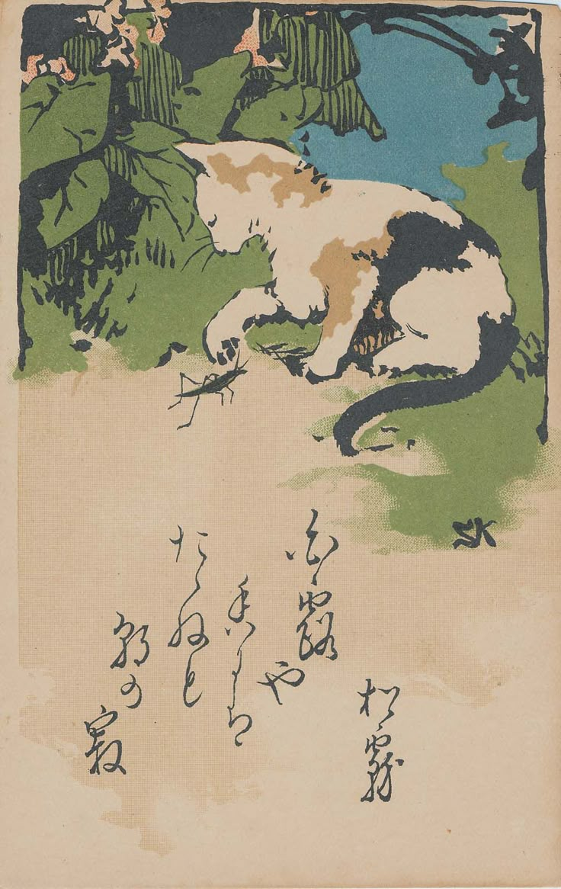
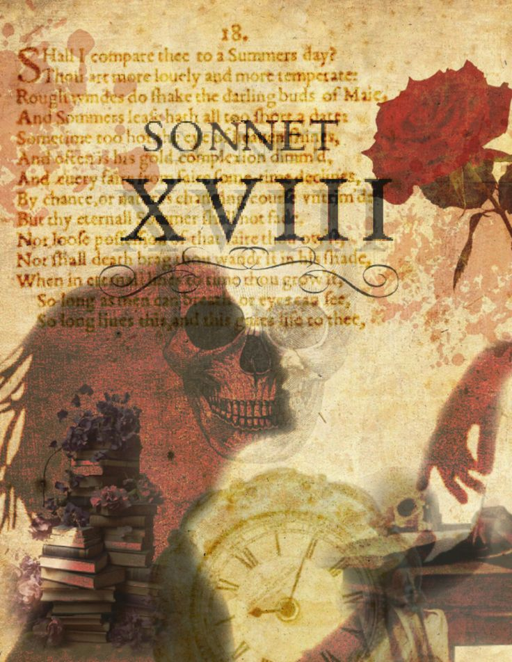

Haiku
A traditional Japanese form of poetry made up of 3 lines with a 5–7–5 syllable structure. Haikus often focus on nature, seasons, and small moments that carry deep meaning.

Sonnet
A 14-line poem that often explores themes of love, time, beauty, or reflection. Sonnets follow structured rhyme schemes and are known for emotional depth.

Free Verse
Poetry without strict rules of rhyme or structure. Free verse flows naturally, allowing the writer to express thoughts and emotions freely.

Limerick
A humorous five-line poem with a strong rhythm and rhyme pattern. Limericks are often playful and tell short, funny stories.